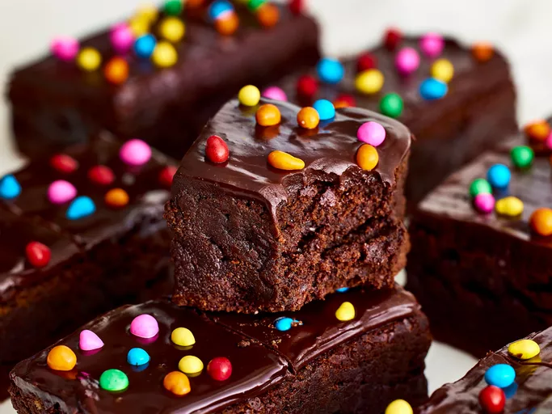

Cosmic Brownies

- prep time: 30 minutes
- Cook Time: 1 hour 5 minutes
- cool time: 2 hours
- servings: 12
description
Watch out Little Debbie—this copycat recipe for Cosmic Brownies is a dead ringer for (if not better than) the original treat. Our recipe tester went as far as to call them "the most perfect brownie ever" thanks to the combination of a chewy and fudgy brownie, topped with a melt-in-your-mouth ganache, and crunchy sprinkles. This dessert will transport you back to childhood.
ingredients
brownie
- baking spray
- 14 ounces (60% cacao) bittersweet chocolate bar, coarsely chopped
- 1 cup packed brown sugar
- 2 eggs
- 2 teaspoons vinilla extract
- 1 teaspoon baking sugar
- 2 teaspoons hot water
- ½ teaspoon salt
- 3 cups all-purpose flour
- 2 cups semisweet chocolate chips
- 1 cup chopped walnuts
ganache
Instructions
- Gather your ingredients, making sure your butter is softened, and your eggs are room temperature.
- Preheat the oven to 350 degrees F (175 degrees C).
- Beat butter, white sugar, and brown sugar with an electric mixer in a large bowl until smooth.
- Beat in eggs, one at a time, then stir in vanilla.
- Dissolve baking soda in hot water. Add to batter along with salt.
- Stir in flour, chocolate chips, and walnuts.
- Drop spoonfuls of dough 2 inches apart onto ungreased baking sheets.
- Bake in the preheated oven until edges are nicely browned, about 10 minutes.
- Cool on the baking sheets briefly before removing to a wire rack to cool completely.
- Store in an airtight container or serve immediately and enjoy!
Nutrition Facts
- 146 calories
- 8g fat
- 19g carbs
- 2g protein